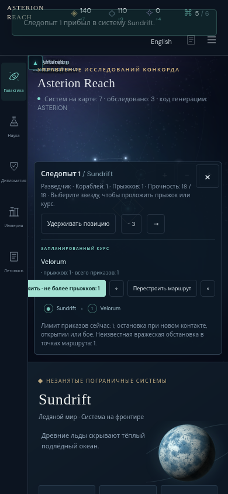
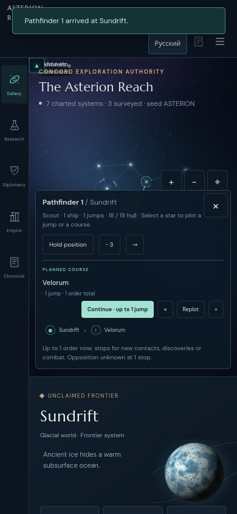

Original measured finding · Firefox 146.0.1 · source 14b36d1
On the actual 390 × 844 Russian touch view, plot Solace → Sundrift → Velorum, hold the Pathfinder, select Sundrift in the itinerary, then use the visible Move action. The remaining-route action row is wider than its container. Its first button begins at x −1.38 while the clipped main stage starts at x 48, hiding approximately 49.38 pixels of the Continue label.
The row has flex-wrap: nowrap, width 369.38 pixels, and overflow-x: visible; its client width equals its scroll width. This is not an intentionally scrollable action row. The containing main stage uses overflow: hidden. English fits in 234.32 pixels. The full campaign state is identical across the two languages.
Exact geometry, UI selectors, and state hashes · Reproduction · Source pin · Manifest


The bounded proposed correction is to wrap and constrain the action row in narrow viewports, giving its primary action enough room and retaining the other route controls below it. Root confirmed the finding and is implementing that correction. This record is the unmodified pre-fix finding; later acceptance belongs in a separate artifact.